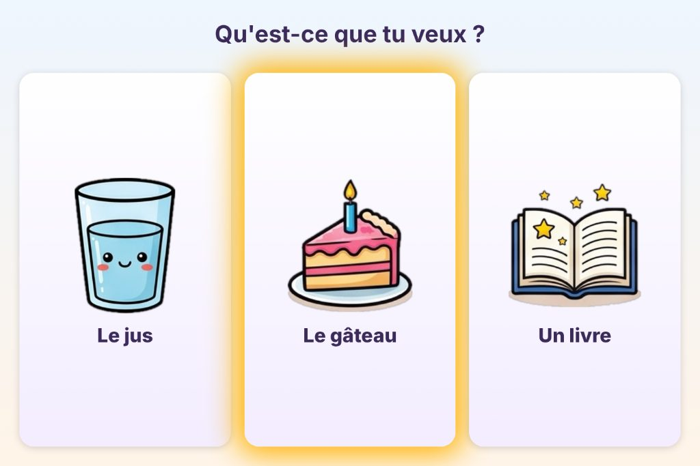
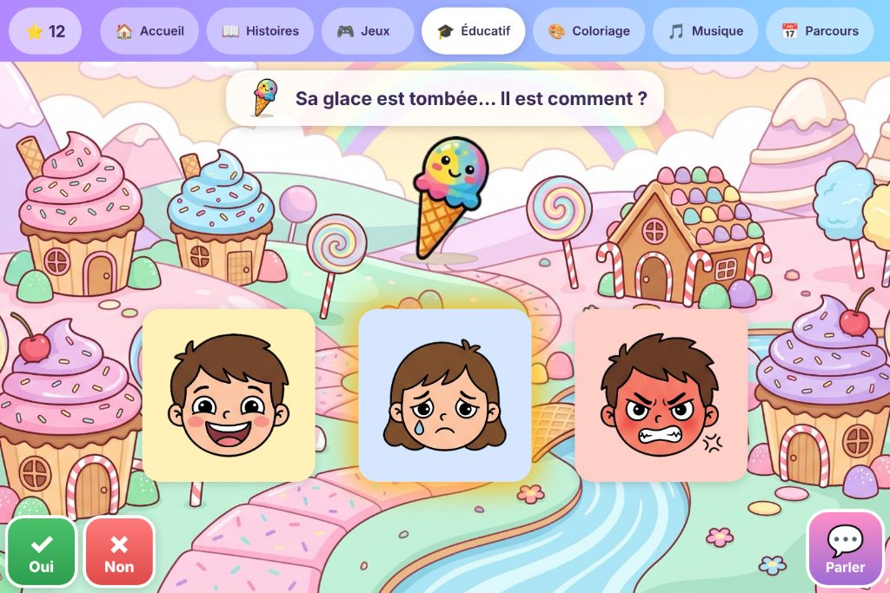
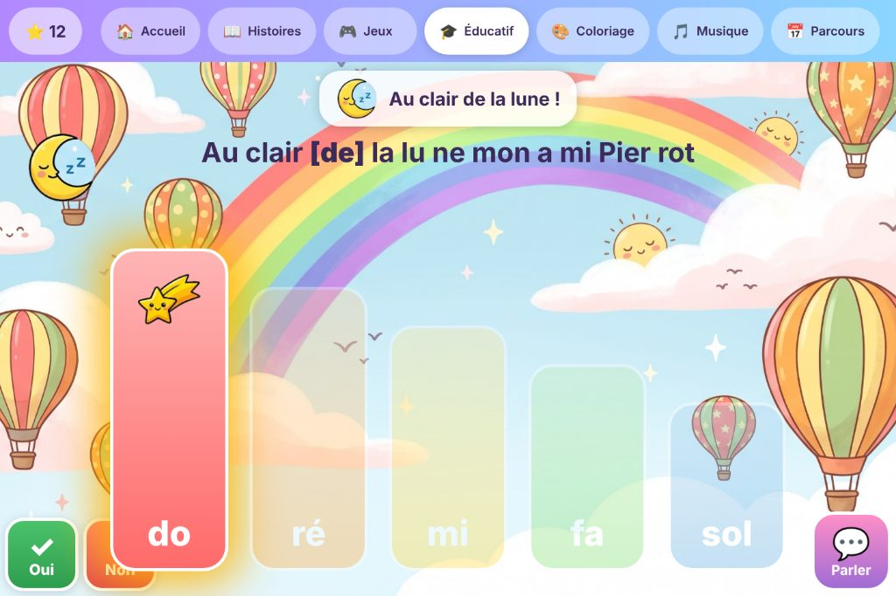
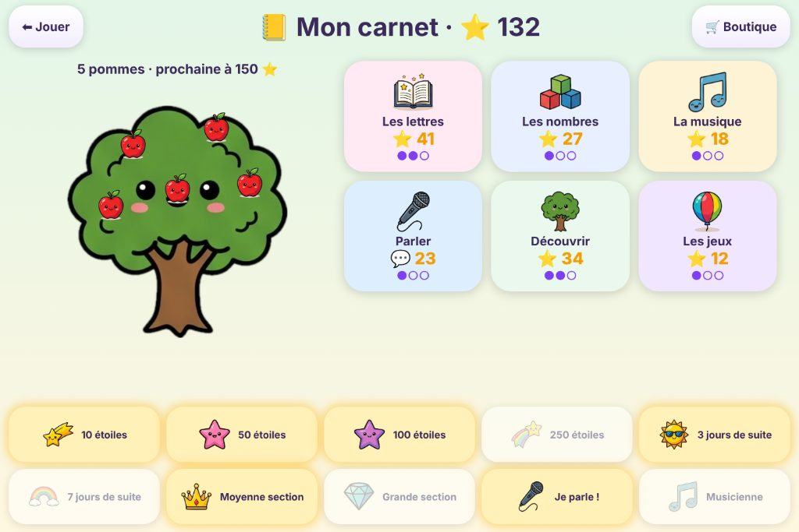
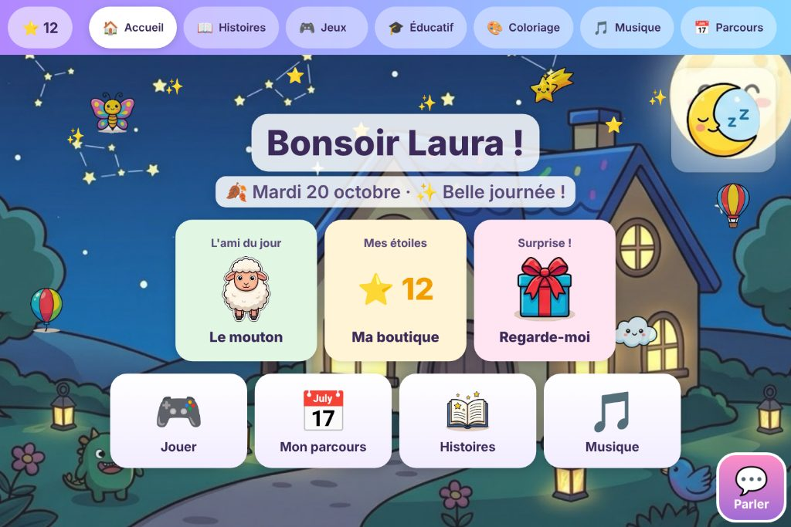

Découvrir en une minute
L'accueil, « Je choisis », les émotions, la musique, le carnet. Les écrans sont des maquettes illustrant l'application.
Ce qu'il y a dedans
Une seule application, du premier regard aux premiers mots.
👁
Pensé pour les yeuxGros boutons, cercle de fixation réglable ou automatique, tout est lu à voix haute et surligné pendant la lecture. L'enfant n'a jamais l'impression d'avoir « cliqué pour rien ».Parler, Oui, NonToujours à l'écran : je veux, j'ai mal, encore, fini, ma journée, et « Je choisis » pour les vrais choix du quotidien.
Des jeux inclusifsBallons, paires, cherche et trouve, émotions, range la maison, instruments, xylophone, « Au clair de la lune ».
Lettres, nombres, anglaisMon prénom, mot et image, rimes, compter, partager, la bande numérique, premiers mots d'anglais.
Vos histoires, vos photosDes livres avec les photos de la famille, lus avec votre voix enregistrée.
Trois niveauxPetite, moyenne, grande section : l'application monte ou descend toute seule selon les réussites.
Le carnet et les étoilesL'arbre à pommes, les badges, la boutique de surprises, le bilan pour les parents et les thérapeutes.
Chaque famille chez elleUne licence par famille ; les contenus voyagent entre vos tablettes chiffrés avec votre mot de passe, lisibles par vous seuls. Mises à jour automatiques, comme une application du Store.
Quelques écrans
Maquettes des écrans de l'application.





Compatibilité, aujourd'hui
Ce qui est testé, ce qui marche, ce qui n'est pas encore là.
✅
Windows 10 et 11PC ou tablette 64 bits, écran de 12 pouces ou plus conseillé. Sans droits administrateur.
✅
Tobii Dynavox TD I-13 et I-16Testés tous les jours. Regard direct, sans TD Control.
✅
Tobii Dynavox PCEye 5Testé. Même moteur direct que Grid 3.
✅
Tobii Eye Tracker 4C et 5Les capteurs grand public, avec Tobii Experience.
✅
Tobii Pro (Nano, Fusion…)Par le Tobii Pro SDK, avec la position des yeux.
🟡
Toute commande oculaire qui déplace la sourisIrisbond, Lumin-i, TD Control, Computer Control… en mode « Curseur ».
✅
Au doigt et à la sourisSans capteur, pour les frères et sœurs, ou pour préparer une activité.
✅
VoixVoix Windows hors ligne ; voix naturelle Azure en option. Français ; anglais pour le module d'anglais.
❌
Pas encoreMac, iPad, Android, Chromebook.
Votre capteur n'est pas dans la liste ? Essayez le mode « Curseur », et dites-nous ce que vous avez : c'est comme ça que la liste s'allonge.
La licence, gratuite pendant la bêta
Eyzi est en version bêta : l'application marche, elle est utilisée tous les jours par une famille, et elle s'améliore à chaque retour. La licence sert à regrouper les tablettes d'une même famille, à recevoir les mises à jour, et à savoir ce qui est utilisé pour améliorer ce qui compte.
Famillegratuit
Un numéro pour la maison, 2 tablettes. Les photos, voix et livres voyagent entre les tablettes, chiffrés.
Établissementgratuit
IME, IEM, école, hôpital : plusieurs postes, les bilans et l'usage pour l'équipe.
Professionnelgratuit
Orthophoniste, ergothérapeute : pour les séances, avec le bilan de chaque enfant.
La bêta est limitée : 10 licences pour commencer, puis d'autres s'ouvrent au fil des retours, jusqu'au 30 juin 2027. Les demandes suivantes sont gardées dans l'ordre d'arrivée. Si l'application devient payante un jour, les familles et établissements de la bêta garderont leur licence gratuite.
Vos retours font l'application
Eyzi est née pour une petite fille, Laura, et grandit avec ceux qui l'utilisent. Un jeu trop difficile, une voix trop rapide, une idée, un bug : dites-le, simplement.
Pour les curieux : versions test et prod
Chaque nouvelle version sort d'abord en test, puis passe en prod une fois essayée. Le bouton de téléchargement donne la version prod ; la page des versions liste aussi les versions test, avec leur empreinte de contrôle.